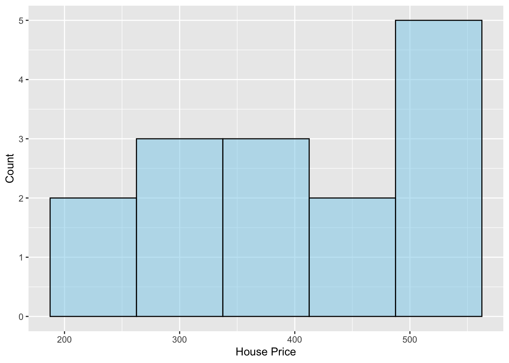

9 One-Sample t-Test: Errors and Assumptions
In this chapter you will learn about two types of errors that we can potentially make in hypothesis testing when we draw conclusions. You will also learn about the assumptions that we need to make in order for the results of a one-sample t-test to be statistically valid.
9.1 Type I and Type II Errors
The conclusions we draw about hypotheses are based on a p-value. Remember the p in p-value stands for probability. That means the conclusions are probabilistic in nature. For example, in our teen sleep case study the p-value was .0000000000000433. If we were interpreting this value, we would say:
If the null hypothesis is true, the probability of seeing a sample mean at least as extreme as 7.5 (the mean we observed in the data), is .0000000000000433.
From this we reasoned that because seeing the sample mean we observed was so unlikely that the null hypothesis was probably not true; we rejected the null hypothesis. In reality, however, this decision to reject might be wrong. It may be that the null hypothesis is true, and we just observed something that was a really, really low probability event. After all, the probability of seeing such an extreme sample mean did not have a zero probability.
9.1.1 Type I Errors
Anytime we reject the null hypothesis in a hypothesis test, we might make what is called a Type I error.1 A Type I error is rejecting the null hypothesis when it is, in fact, true. In our example this would mean concluding that the average amount of sleep for all teens was less than 9 hours, when in fact it really wasn’t.
Unfortunately, when we reject the null hypothesis, we can never know if we made a Type I error or not. In order to determine that, you would actually need to know what the population mean was, in which case you wouldn’t have to test what it was. While we can’t know if we made a Type I error, we can set the probability of making a Type I error. The probability of making a Type I error is called \(\alpha\) (alpha)2 and is the value we compare our p-value to. In the social sciences, this probability is almost always .05. That is why we compare our p-value to .05 in order to decide whether to reject the null hypothesis.
9.1.2 Type II Errors
A Type II error is failing to reject the null hypothesis when it is, in fact, false. For example, if we had found a p-value in the teen sleep case study that was bigger than .05, we would have failed to reject the null hypothesis. In this case, our conclusion would have been that the average amount of sleep for all teens was NOT less than 9 hours. Once again, once you have drawn a conclusion about the null hypothesis, there is some probability that the conclusion you drew was wrong.
Similar to our potential for making an error when we reject a null hypothesis, we can never know for sure whether we have made a Type II error or not after we fail to reject a null hypothesis. We can only know the probability of making a Type II error which is conventionally termed \(\beta\) (beta)3. The value of \(\beta\) is somewhat complex, but has an inverse relationship with the value of \(\alpha\), such that as the value of \(\alpha\) gets smaller, the value of \(\beta\) gets larger, and vice versa. This means that if you make \(\alpha\) smaller (to protect against making a Type I error), you will make the probability of making a Type II error larger!
The type of error you can make is completely dependent on the conclusion you draw about the null hypothesis. For example, if we reject the null hypothesis, the only type of error you can make is a Type I error. You cannot make a Type II error since that requires failing to reject the null hypothesis. That is, when you reject the null hypothesis, the probability of making a Type II error is 0. Similarly, if you fail to reject the null hypothesis, then you cannot make a Type I error; the probability of making a Type I error after you fail to reject the null hypothesis is 0.
9.1.3 Some Practice with Type I and Type II Errors
Your Turn
In the continuous assessment case study from Chapter 8, we evaluated the following set of hypotheses about whether, on average, Ethiopian primary school teachers agree/disagree with the statement that they assess students’ prior knowledge:
\[ \begin{split} H_0: \mu = 2.5 \\[1ex] H_A: \mu \neq 2.5 \end{split} \]
Based on the results of the one-sample t-test, \(t(29) = -0.41\), \(p = 0.687\), which type of error could we have made if we were using an \(\alpha\)-value of .05? Explain.
Using the context of the problem (i.e., survey responses of the assessment of prior knowledge) and the hypotheses tested, what does it mean to make this type of error?
In the house prices case study from Chapter 8, we evaluated the following set of hypotheses about whether, on average, houses near the University of Minnesota campus more expensive than $322.46k (the average price of a single-family house in Minneapolis as of May 2023).
\[ \begin{split} H_0: \mu = 322.46 \\[1ex] H_A: \mu > 322.46 \end{split} \]
Based on the results of the one-sample t-test, \(t(14) = 3.12\), \(p = 0.004\), which type of error could we have made if we were using an \(\alpha\)-value of .05? Explain.
Using the context of the problem (i.e., house prices near the UMN campus) and the hypotheses tested, what does it mean to make a this type of error?
9.2 Assumptions
Whether or not the p-value we obtain from the t-test is accurate depends on a set of statistical assumptions about the population. If the assumptions we make about the population are erroneous, then all of our inferences that we draw about the population mean are dubious, since these inferences are based on the p-value. This implies that it is critical that we have some sense of whether these statistical assumptions we are making are valid.
For the one-sample t-test there are two statistical assumptions we make about the population:
- The distribution of values in the population is normally distributed.
- The values in the population are independent from each other.
For example, in the teen sleep case study we need to know that:
- If you took the hours of sleep measurements from every teen and plotted them, the distribution would be normally distributed.
- The hours of sleep measurements from every teen is independent from those of every other teen.
Unfortunately, we can never know for sure whether these assumptions are met since we do not have data from the entire population. Instead, we have to decide whether these assumptions seem tenable based on the sample of data we have.
9.2.1 Evaluating the Assumption of Normality
To evaluate the first assumption that the distribution of values in the population is normally distributed, we plot the sample data and then ask the question: Is this distribution close to normal? The density plot of the sample teen sleep data is shown in Figure 9.1.
The sample distribution looks symmetric, but perhaps not exactly normal. This is okay since the assumption is about whether the POPULATION distribution is normal, not whether the sample distribution is normal. We are only asking whether we believe that the population distribution is normal based on what we see in the sample distribution. To answer this question, we need some idea of what sample distributions of size 75 look like if they truly do come from a population that is normally distributed. Below are the distributions for five samples of size 75 that were actually drawn from a normal distribution.
The density plots in Figure 9.2 suggest that the distribution for a sample that was actually drawn from a normal distribution does not necessarily look exactly normal. For example the plots for Sample 1 and Sample 3 look slightly right-skewed, while the plots for Samples 2, 4, and 5 look more symmetric. Some of the plots look more peaked (Samples 1 and 2) while others look thicker in the middle (Samples 4 and 5). All of this suggests that the sample doesn’t have to look perfectly normal for it to have been drawn from a population that is normal.
Looking back at the sample distribution of teen sleep measurements in Figure 9.1, it seems that this distribution is not so different from the distributions of the five other samples. This suggests that it too might have been drawn from a normally distributed population. In light of this, we would say:
The assumption of normality seems tenable given the distribution of the sample data.
9.2.1.1 Sample Size and the Assumption of Normality
How different would the sample distribution have to look in order for us to conclude that the assumption of normality was not tenable given the distribution of the sample data? This is a difficult question to answer without other statistical tools.4 One tool that we rely on a great deal is something called the Central Limit Theorem (CLT). This theorem basically says that if the sample size of your data is over 30 that it doesn’t matter if the normality assumption is met, the p-value will not be impacted if the population is not normal.
In our example the sample size is 75. This means that it doesn’t matter if the population is normal or not—the CLT basically says that we can assume that the p-value is not impacted by any deviation in the population distribution from normality. This is good news as it means we don’t have to guess whether or not our sample distribution of teen sleep measurements actually comes from a populatin that is normally distributed.
9.2.2 Evaluating the Independence Assumption
The definition of independence relies on formal mathematics. Loosely speaking a set of observations is independent if knowing the value for one observation in the distribution conveys no information about the value for any other observation in the same distribution. If observations are not independent, we say they are dependent or correlated.
To evaluate the independence assumption we need to know something about the the study design, in particular how the data were collected. Using random chance to select the sample data (random sampling) will guarantee independence of the observations. There are also a few times that we can ascertain that the independence assumption would be violated. These instances are also a function of the data collection process. One such instance common to social science research is when the observations (i.e., cases, subjects) are collected within a physical or spatial proximity to one another. For example, this is typically the case when a researcher gathers a convenience sample based on location, such as sampling students from the same school. Another violation of independence occurs when observations are collected over time (longitudinally), especially when the observations are repeated measures from the same subjects.
Independence is often difficult to ascertain, and its tenability is made via a logical argument. In the teen sleep case study, for example, the study design did not employ random sampling—the participants volunteered to be a part of the study—so we can not guarantee independence that way. (If a study uses random sampling in the data collection, it will say this directly in the paper.) On the other hand, all the participants did come from the same school district. This may violate the independence assumption since the teens in the study are all from the area (i.e., there was some degree of spatial proximity that influenced the data collection process).
The violation of independence is, however, not clear cut. The big question is does knowing that one teen’s sleep duration convey any information about any other teen’s sleep duration? If for example all the teens came from the same family this would likely be the case since teens in a family are often similar sleep schedules. It is less likely that this is a case for teens in the same school district. Because of this, we could argue that the independence assumption seems tenable.
Because the tenability of the independence assumption is made via a logical argument, outside the use of random sampling to collect the data, different scholars might disagree about whether this assumption is tenable. In this class, and in your own work, you need to lay out the argument for why you think the independence assumption is reasonable or not.
9.2.3 Evaluating Assumptions in the Continuous Assessment Case Study
Your Turn
In the continuous assessment case study from Chapter 8, we evaluated whether, on average, Ethiopian primary school teachers agree/disagree with the statement that they assess students’ prior knowledge. The histogram of the 30 teachers’ responses is shown below. Based on this plot and the sample size, do you believe the normality assumption is tenable?
Based on the data collection process described in the data codebook, do you believe the independence assumption is tenable?
9.2.4 Evaluating Assumptions in the House Prices Case Study
Your Turn
In the house prices case study from Chapter 8, we evaluated whether, on average, houses near the University of Minnesota campus are more expensive than $322.46k (the average price of a single-family house in Minneapolis as of May 2023). The histogram of the 15 sample house prices is shown below. Based on this plot and the sample size, do you believe the normality assumption is tenable?

Based on the data collection process described in the data codebook, do you believe the independence assumption is tenable?
9.3 References
Conventionally, we use Roman numerals to indicate the different types of errors we can make in hypothesis testing.↩︎
Fun Fact: \(\alpha\) is the first letter in the Greek alphabet (equivalent to the Roman letter “a”) so that is why it is associated with the first type (i.e., Type I) error.↩︎
Fun Fact: \(\beta\) is the second letter in the Greek alphabet (equivalent to the Roman letter “b”) so that is why it is associated with the second type (i.e., Type II) error.↩︎
If you go on and take EPsy 8251, you will learn about some of these tools.↩︎